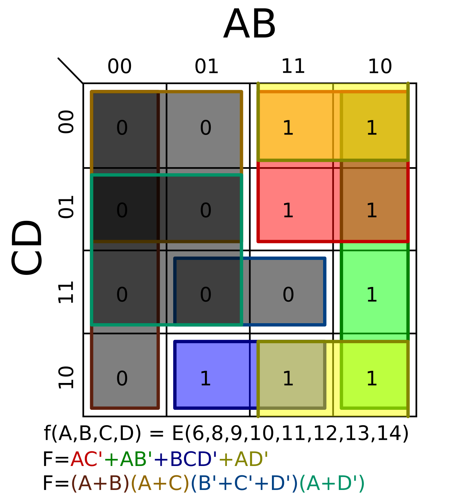
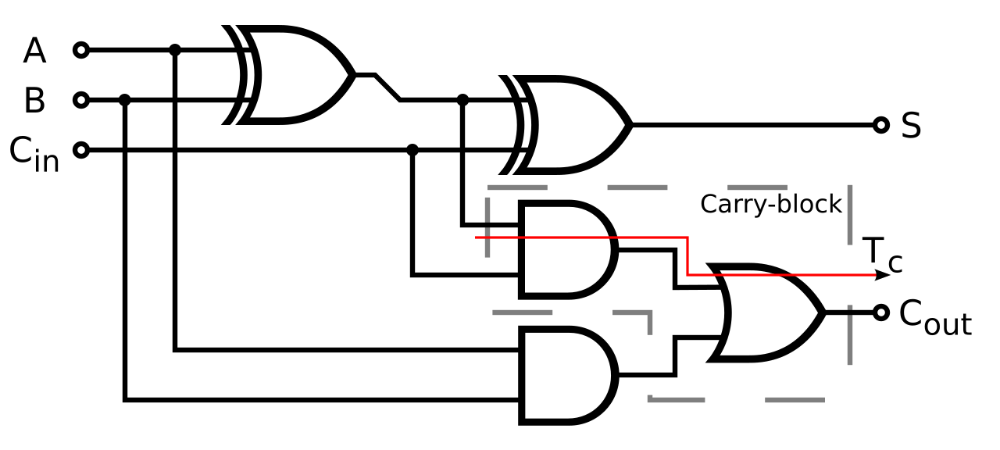
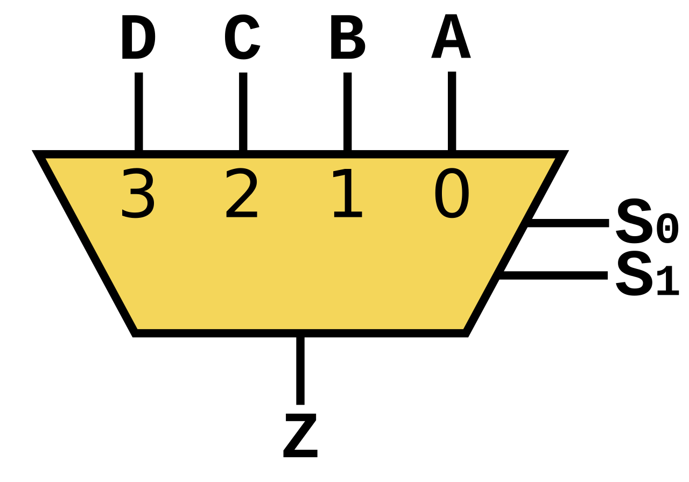
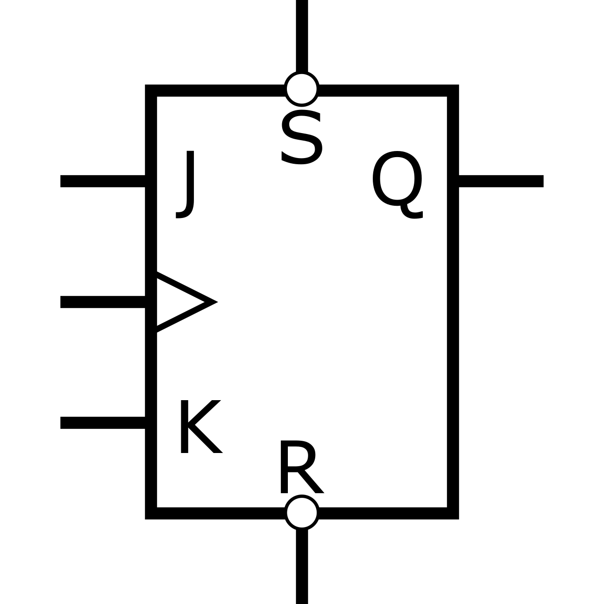
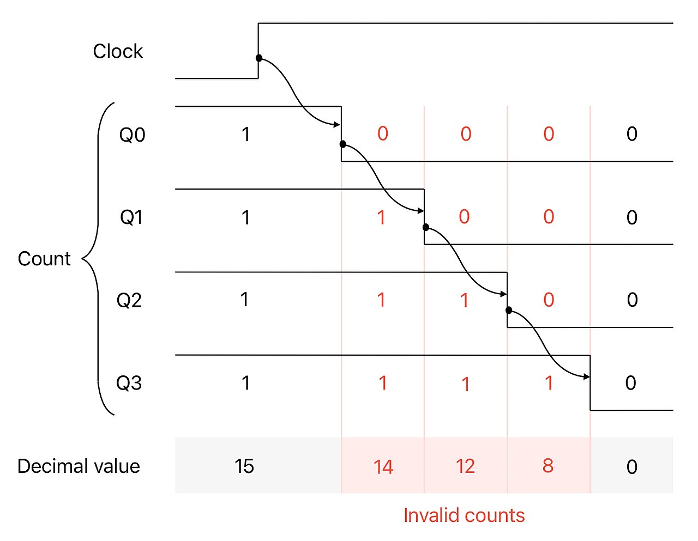
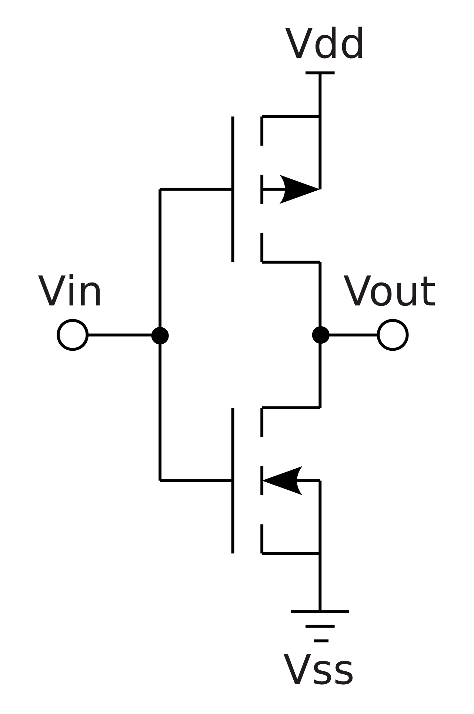

Digital Electronics & Logic Design
Complete Exam-Oriented Study Guide — Simple Intuition, SPPU Exam Definitions, Solved K-Maps & Numericals, Verilog/Python Code, SVG & Circuit Diagrams, and Past Paper Model Answers.
Unit I: Boolean Algebra and Simplification Techniques
1.1 Logic Gates & Universal Gates (NAND, NOR)
Every digital computer is built from tiny electronic switches called logic gates. A logic gate takes one or more binary inputs ($0$ = LOW / False, $1$ = HIGH / True) and produces a single binary output based on a fixed rule.
Exam Definition: A Universal Gate is a logic gate using which any Boolean function or any other basic logic gate (NOT, AND, OR, XOR, XNOR) can be realized without needing any other gate type. NAND and NOR are the two universal gates.
In Simple Words: Think of NAND and NOR as "master LEGO bricks." Even if a factory only ships you NAND chips (like IC 7400) or NOR chips (like IC 7402), you can wire them together to build every other gate in a CPU.
Realization of Basic Gates Using NAND Gates Only (IC 7400)
- NOT using NAND: Tie both inputs of a NAND gate together: $Y = \overline{A \cdot A} = \overline{A}$. (1 NAND gate)
- AND using NAND: Invert the output of a NAND gate using another NAND-as-NOT: $Y = \overline{\overline{A \cdot B}} = A \cdot B$. (2 NAND gates)
- OR using NAND: Invert both inputs first, then feed to a NAND gate (by DeMorgan's law): $Y = \overline{\overline{A} \cdot \overline{B}} = A + B$. (3 NAND gates)
- XOR using NAND: $A \oplus B$ requires 4 NAND gates: $g_1 = \overline{AB}$, $g_2 = \overline{A \cdot g_1}$, $g_3 = \overline{B \cdot g_1}$, $Y = \overline{g_2 \cdot g_3}$.
- XNOR using NAND: Add 1 more NAND-as-NOT at the XOR output (5 NAND gates).
Realization of Basic Gates Using NOR Gates Only (IC 7402)
- NOT using NOR: Tie both inputs together: $Y = \overline{A + A} = \overline{A}$. (1 NOR gate)
- OR using NOR: Invert the NOR output: $Y = \overline{\overline{A + B}} = A + B$. (2 NOR gates)
- AND using NOR: Invert both inputs first, then feed to a NOR gate: $Y = \overline{\overline{A} + \overline{B}} = A \cdot B$. (3 NOR gates)
- XNOR using NOR: Requires 4 NOR gates; XOR using NOR requires 5 NOR gates.
1.2 Boolean Algebra Theorems & DeMorgan's Rules
Exam Definition: Boolean Algebra is a mathematical system formulated by George Boole over the binary set $B = \{0, 1\}$ with two binary operators ($+$ for OR, $\cdot$ for AND) and one unary operator ($'$ or $\overline{\phantom{A}}$ for NOT), satisfying Huntington's postulates.
In Simple Words: It is the "algebra of True/False." Instead of solving for $x = 5$, you simplify switching equations so your circuit uses fewer gates, costs less, and runs faster.
| Law / Theorem | AND Form (Dual 1) | OR Form (Dual 2) |
|---|---|---|
| Identity Law | $A \cdot 1 = A$ | $A + 0 = A$ |
| Null / Dominance Law | $A \cdot 0 = 0$ | $A + 1 = 1$ |
| Idempotent Law | $A \cdot A = A$ | $A + A = A$ |
| Complement Law | $A \cdot \overline{A} = 0$ | $A + \overline{A} = 1$ |
| Involution (Double Negation) | $\overline{\overline{A}} = A$ | |
| Commutative Law | $A \cdot B = B \cdot A$ | $A + B = B + A$ |
| Associative Law | $(A \cdot B) \cdot C = A \cdot (B \cdot C)$ | $(A + B) + C = A + (B + C)$ |
| Distributive Law | $A \cdot (B + C) = A B + A C$ | $A + (B \cdot C) = (A + B)(A + C)$ |
| Absorption Law | $A \cdot (A + B) = A$ | $A + A \cdot B = A$ |
| Redundancy / Consensus | $(A + B)(\overline{A} + C)(B + C) = (A + B)(\overline{A} + C)$ | $AB + \overline{A}C + BC = AB + \overline{A}C$ |
| DeMorgan's Theorems | $\overline{A \cdot B} = \overline{A} + \overline{B}$ | $\overline{A + B} = \overline{A} \cdot \overline{B}$ |
Rule 1: $\overline{A \cdot B} = \overline{A} + \overline{B}$ ("Break the bar, change the sign"). Rule 2: $\overline{A + B} = \overline{A} \cdot \overline{B}$.
| $A$ | $B$ | $\overline{A}$ | $\overline{B}$ | $\overline{A \cdot B}$ | $\overline{A} + \overline{B}$ | $\overline{A + B}$ | $\overline{A} \cdot \overline{B}$ |
|---|---|---|---|---|---|---|---|
| 0 | 0 | 1 | 1 | 1 | 1 | 1 | 1 |
| 0 | 1 | 1 | 0 | 1 | 1 | 0 | 0 |
| 1 | 0 | 0 | 1 | 1 | 1 | 0 | 0 |
| 1 | 1 | 0 | 0 | 0 | 0 | 0 | 0 |
1.3 Signed Binary Number Representation
Computers only store $0$s and $1$s — there is no minus sign hardware bit! To store negative integers in $n$ bits, we reserve the Most Significant Bit (MSB) as the sign bit ($0$ = positive, $1$ = negative).
| Feature | Signed Magnitude | 1's Complement | 2's Complement (Used in CPUs) |
|---|---|---|---|
| Positive Number ($+N$) | Sign bit $0$ + binary magnitude | Same as Signed Magnitude | Same as Signed Magnitude |
| Negative Number ($-N$) | Flip only MSB to $1$ | Invert all bits of $+N$ | 1's complement of $+N$, then add $1$ |
| Range ($n$ bits) | $-(2^{n-1}-1)$ to $+(2^{n-1}-1)$ | $-(2^{n-1}-1)$ to $+(2^{n-1}-1)$ | $-2^{n-1}$ to $+(2^{n-1}-1)$ |
| Representation of Zero | Two zeros: $+0$ (`0000`) & $-0$ (`1000`) | Two zeros: $+0$ (`0000`) & $-0$ (`1111`) | Unique zero (`0000`) |
| Subtraction Rule | Separate sign & magnitude hardware | Add 1's comp; add end-around carry | Add 2's comp; discard final carry |
Solved Numerical: Represent $-23_{10}$ in 8-bit Signed Magnitude, 1's Complement, and 2's Complement (SPPU Oct 2025, 4M)
- First write $+23_{10}$ in 8-bit binary: $23 = 16 + 4 + 2 + 1 = (00010111)_2$.
- Signed Magnitude: Change MSB to $1 \implies \mathbf{10010111_2}$.
- 1's Complement: Invert every bit of $00010111 \implies \mathbf{11101000_2}$.
- 2's Complement: Add $1$ to 1's complement: $11101000 + 1 \implies \mathbf{11101001_2}$.
Solved Numerical: Perform $(151)_{10} - (76)_{10}$ using 1's and 2's Complement (SPPU Oct 2025, 4M)
Since $151$ needs 8 magnitude bits ($151 = 10010111_2$), use a 9-bit (or 10-bit) signed representation so the sign bit is clear. Using 9 bits: $+151 = 010010111_2$, $+76 = 001001100_2$.
- 1's Complement Method: 1's comp of $76$ is $110110011_2$. Add to $+151$: $010010111 + 110110011 = 1\;001001010_2$. Carry-out $= 1$. Add end-around carry: $001001010 + 1 = 001001011_2 = \mathbf{+75_{10}}$.
- 2's Complement Method: 2's comp of $76$ is $110110100_2$. Add to $+151$: $010010111 + 110110100 = 1\;001001011_2$. Discard the carry-out $1 \implies 001001011_2 = \mathbf{+75_{10}}$.
1.4 SOP, POS & Karnaugh Map (K-Map) Minimization (Up to 4-5 Variables)
Exam Definition: A Sum of Products (SOP) expression is an OR of AND terms (minterms $m_i$ where output $= 1$). A Product of Sums (POS) expression is an AND of OR terms (maxterms $M_i$ where output $= 0$). In Canonical (Standard) form, every term contains all input variables in true or complemented form.
In Simple Words: SOP hunts for all the "$1$" rows in a truth table and ORs them together. POS hunts for all the "$0$" rows and ANDs them together. A K-Map arranges those rows in a Gray-code grid so neighboring cells differ by just 1 bit, letting you merge pairs, quads, and octets visually.

Solved K-Map Numerical (SOP): Minimize $Y = \sum m(0, 1, 2, 5, 7, 8, 9, 10, 13, 15)$ (SPPU Oct 2025, 5M)
| $AB \backslash CD$ | $00$ | $01$ | $11$ | $10$ |
|---|---|---|---|---|
| $00$ | 1 (0) | 1 (1) | 0 (3) | 1 (2) |
| $01$ | 0 (4) | 1 (5) | 1 (7) | 0 (6) |
| $11$ | 0 (12) | 1 (13) | 1 (15) | 0 (14) |
| $10$ | 1 (8) | 1 (9) | 0 (11) | 1 (10) |
- Quad 1 (4 corners: $m_0, m_2, m_8, m_{10}$): $B=0, D=0 \implies \overline{B}\overline{D}$.
- Quad 2 ($m_0, m_1, m_8, m_9$): $B=0, C=0 \implies \overline{B}\overline{C}$.
- Quad 3 ($m_5, m_7, m_{13}, m_{15}$): $B=1, D=1 \implies BD$.
- Minimal SOP: $Y = \overline{B}\overline{D} + \overline{B}\overline{C} + BD$.
Solved K-Map Numerical (POS): Minimize $F(A, B, C, D) = \prod M(0, 2, 3, 8, 9, 12, 13, 15)$ (SPPU Oct 2025, 5M)
Place $0$s at maxterms $\{0, 2, 3, 8, 9, 12, 13, 15\}$ and group the $0$s into largest powers of 2:
- Quad ($M_8, M_9, M_{12}, M_{13}$): $A=1, C=0 \implies (\overline{A} + C)$.
- Pair ($M_0, M_2$): $A=0, B=0, D=0 \implies (A + B + D)$.
- Pair ($M_2, M_3$): $A=0, B=0, C=1 \implies (A + B + \overline{C})$.
- Pair ($M_{13}, M_{15}$): $A=1, B=1, D=1 \implies (\overline{A} + \overline{B} + \overline{D})$.
- Minimal POS: $F = (\overline{A} + C)(A + B + D)(A + B + \overline{C})(\overline{A} + \overline{B} + \overline{D})$.
For 5 variables $F(A,B,C,D,E)$, draw two 4-variable K-maps side by side: one for $A=0$ (minterms $0$–$15$) and one for $A=1$ (minterms $16$–$31$). Any group in the exact same row/column position on both maps combines across $A$ to eliminate variable $A$!
1.5 Quine-McCluskey (Tabulation) Method
When there are 5 or more variables, K-Maps become hard to read visually. The Quine-McCluskey (QM) method is a systematic, computer-friendly algorithm to find the exact minimal SOP.
- Group minterms by the number of $1$s in their binary representation.
- Compare adjacent groups: if two terms differ in exactly 1 bit, combine them and replace that bit with a dash (
-). Repeat until no more merges are possible; unmerged terms are Prime Implicants (PIs). - Prime Implicant Chart: list PIs as rows and minterms as columns. Find columns with a single checkmark (Essential Prime Implicants), then cover any remaining minterms with minimum extra PIs.
Minimize $F(A,B,C,D) = \sum m(0, 1, 2, 5, 7, 8, 9, 10, 13, 15)$.
| Group (1s) | Minterm | Binary (ABCD) | Stage 1 Pairs | Stage 2 Quads |
|---|---|---|---|---|
| 0 | 0 | 0000 | (0,1) 000- ; (0,2) 00-0 ; (0,8) -000 | (0,1,8,9) -00- → B'C' |
| 1 | 1, 2, 8 | 0001, 0010, 1000 | (1,5) 0-01 ; (1,9) -001 ; (2,10) -010 ; (8,9) 100- ; (8,10) 10-0 | (0,2,8,10) -0-0 → B'D' |
| 2 | 5, 9, 10 | 0101, 1001, 1010 | (5,7) 01-1 ; (5,13) -101 ; (9,13) 1-01 | (5,7,13,15) -1-1 → BD |
| 3 | 7, 13 | 0111, 1101 | (7,15) -111 ; (13,15) 11-1 | (1,5,9,13) --01 → C'D |
| 4 | 15 | 1111 | — | All 4 quads are Prime Implicants |
Essential Prime Implicants: From the PI chart, B'D' covers 2 & 10, BD covers 7 & 15, and B'C' covers 0 & 8. Together B'C' + B'D' + BD covers all minterms (1, 5, 9, 13 are already covered by these three!).
Minimal SOP: $F(A,B,C,D) = B'C' + B'D' + BD$.
1.6 Case Study & Important SPPU Exam Questions
Syllabus Case Study: Design & Optimization of a Digital Temperature Control System
A server-room controller has 3 binary sensors: $T_H$ (Temp > 35°C), $H_H$ (Humidity > 70%), and $M$ (Manual Override). The cooling fan $F = 1$ turns ON if Temp is high, OR if Humidity is high without Manual Override off, OR during Manual Override: $F(T_H, H_H, M) = \sum m(2, 4, 5, 6, 7) + d(3)$. Using a 3-variable K-Map, grouping $(4,5,6,7)$ gives $T_H$, and grouping $(2,3,6,7)$ gives $H_H$. Thus, minimal hardware is just one 2-input OR gate: $F = T_H + H_H$.
Answer: Plot $1$s at $\{1,5,7,13,15\}$ and $X$ (don't care) at $\{0,6,12,14\}$. Group $(5,7,13,15)$ gives $BD$; group $(0,1)$ gives $\overline{A}\overline{B}\overline{C}$ (or group $(1,5)$ gives $\overline{A}\overline{C}D$). Since $(1,5)$ uses only 1 don't-care-free pair, minimal SOP is $F = BD + \overline{A}\overline{C}D$.
Answer: Missing variable in $AB$ is $C$, and in $\overline{A}C$ is $B$. Multiply each by $(X + \overline{X})$:
$F = AB(C + \overline{C}) + \overline{A}C(B + \overline{B}) = ABC + AB\overline{C} + \overline{A}BC + \overline{A}\overline{B}C = \sum m(1, 3, 6, 7)$.
Unit II: Combinational Logic Design
Exam Definition: A combinational circuit is a digital logic circuit whose outputs at any instant depend only on the present combination of inputs, with no memory elements or feedback paths.
In Simple Words: Like a vending machine button or a pocket calculator's `+` key — press the same inputs, and you always get the exact same output immediately, regardless of what happened earlier.
2.1 Adders and Subtractors
| Circuit | Inputs | Outputs & Boolean Equations | Gate Implementation |
|---|---|---|---|
| Half Adder (HA) | $A, B$ | $S = A \oplus B$, $C_{out} = A \cdot B$ | 1 XOR + 1 AND |
| Full Adder (FA) | $A, B, C_{in}$ | $S = A \oplus B \oplus C_{in}$ $C_{out} = AB + BC_{in} + AC_{in}$ |
2 Half Adders + 1 OR gate |
| Half Subtractor (HS) | $A, B$ | $D = A \oplus B$, $B_{out} = \overline{A} \cdot B$ | 1 XOR + 1 NOT + 1 AND |
| Full Subtractor (FS) | $A, B, B_{in}$ | $D = A \oplus B \oplus B_{in}$ $B_{out} = \overline{A}B + (\overline{A \oplus B})B_{in}$ |
2 Half Subtractors + 1 OR gate |

2.2 4-Bit Binary Adder (IC 7483) & BCD Adder
IC 7483 (74LS83) is a 16-pin TTL 4-bit binary parallel adder. It takes two 4-bit numbers $A_3A_2A_1A_0$ and $B_3B_2B_1B_0$ plus an input carry $C_0$, and produces a 4-bit sum $S_3S_2S_1S_0$ and carry-out $C_4$.
Exam Definition: A BCD Adder adds two 4-bit Binary Coded Decimal digits ($0$–$9$) and produces a valid BCD sum ($0$–$9$) with a decimal carry. Whenever the binary sum exceeds $9$ ($1001_2$) or produces a carry-out ($K=1$), binary $6$ ($0110_2$) is added to skip the 6 invalid BCD states ($10$–$15$).
In Simple Words: 4 bits can count up to $15$, but decimal digits stop at $9$. Adding $6$ (`0110`) jumps past the 6 unused codes ($10$–$15$) so the answer wraps cleanly into the tens digit!
Let the first 4-bit adder output be $K$ (carry-out) and $Z_3 Z_2 Z_1 Z_0$. Correction ($+0110_2$) is needed when:
$$C_{out} = K + Z_3 Z_2 + Z_3 Z_1$$Feed $C_{out}$ to inputs $B_2$ and $B_1$ of a second IC 7483 (with $B_3 = B_0 = 0$) to add $0110_2$ when $C_{out} = 1$, or $0000_2$ when $C_{out} = 0$.
Solved Example: BCD Addition of $7 + 8$
- $A = 0111_2$ ($7$), $B = 1000_2$ ($8$). First IC 7483 outputs $Z_3Z_2Z_1Z_0 = 1111_2$ ($15$), $K = 0$.
- Check correction: $C_{out} = 0 + (1 \cdot 1) + (1 \cdot 1) = 1$.
- Second IC 7483 adds $1111_2 + 0110_2 = (1)\;0101_2 \implies \text{Carry} = 1, \text{Sum} = 0101_2$ ($5$), giving $\mathbf{15_{10}}$.
2.3 Look-Ahead Carry Generator (CLA)
In a 4-bit ripple-carry adder, $C_4$ must wait for $C_1 \to C_2 \to C_3$ to ripple through every stage, causing $O(n)$ delay. A Look-Ahead Carry Generator (IC 74182) computes all carries simultaneously in just 2 gate levels!
Define $G_i = A_i \cdot B_i$ (generates a carry regardless of $C_i$) and $P_i = A_i \oplus B_i$ (propagates $C_i$ to $C_{i+1}$):
$$C_1 = G_0 + P_0 C_0$$ $$C_2 = G_1 + P_1 G_0 + P_1 P_0 C_0$$ $$C_3 = G_2 + P_2 G_1 + P_2 P_1 G_0 + P_2 P_1 P_0 C_0$$ $$C_4 = G_3 + P_3 G_2 + P_3 P_2 G_1 + P_3 P_2 P_1 G_0 + P_3 P_2 P_1 P_0 C_0$$2.4 Code Converters (BCD to Excess-3, Binary to Gray, Gray to Binary)
- BCD to Excess-3: Add $3$ ($0011_2$) to each valid BCD digit ($0$–$9$). Inputs $10$–$15$ are don't cares ($d$). Minimized equations for Excess-3 outputs $E_3E_2E_1E_0$ from BCD $B_3B_2B_1B_0$:
$E_0 = \overline{B_0}$, $E_1 = \overline{B_1 \oplus B_0}$, $E_2 = B_2 \oplus (B_1 + B_0)$, $E_3 = B_3 + B_2(B_1 + B_0)$. - 4-Bit Binary ($B_3B_2B_1B_0$) to Gray ($G_3G_2G_1G_0$):
$G_3 = B_3$, $G_2 = B_3 \oplus B_2$, $G_1 = B_2 \oplus B_1$, $G_0 = B_1 \oplus B_0$. - 4-Bit Gray ($G_3G_2G_1G_0$) to Binary ($B_3B_2B_1B_0$):
$B_3 = G_3$, $B_2 = B_3 \oplus G_2$, $B_1 = B_2 \oplus G_1$, $B_0 = B_1 \oplus G_0$.
2.5 Multiplexers (IC 74151), Demultiplexers & 2-Bit Comparator
Exam Definition: A Multiplexer (Data Selector) is a combinational circuit with $2^n$ data inputs, $n$ select lines, and $1$ output that routes one selected input to the output. A Demultiplexer (Data Distributor) performs the reverse operation: $1$ input routed to one of $2^n$ outputs.
In Simple Words: A MUX is a railway track merge (many tracks into 1 main line). A DEMUX is a railway track splitter (1 main line into many sidings).

IC 74151 (8:1 Multiplexer): Has 8 data inputs ($D_0$–$D_7$), 3 select lines ($S_2, S_1, S_0$), active-low strobe/enable ($\overline{E}$), and complementary outputs $Y$ and $\overline{Y}$. To implement a 4-variable function $F(A,B,C,D)$ using an 8:1 MUX, connect $A,B,C$ to $S_2,S_1,S_0$ and express each $D_i$ in terms of $\{0, 1, D, \overline{D}\}$.
2-Bit Magnitude Comparator ($A = A_1A_0$, $B = B_1B_0$)
- $A = B$: $(A_1 \odot B_1) \cdot (A_0 \odot B_0)$ (using two XNOR gates and one AND gate)
- $A > B$: $A_1\overline{B_1} + (A_1 \odot B_1)A_0\overline{B_0}$
- $A < B$: $\overline{A_1}B_1 + (A_1 \odot B_1)\overline{A_0}B_0$
// Verilog HDL: 4-Bit Full Adder & 8:1 Multiplexer (IC 74151 style)
module adder_4bit (
input [3:0] A, B,
input Cin,
output [3:0] Sum,
output Cout
);
assign {Cout, Sum} = A + B + Cin;
endmodule
module mux_8to1 (
input [7:0] D,
input [2:0] S,
input En_n, // Active-low enable
output Y
);
assign Y = (!En_n) ? D[S] : 1'b0;
endmodule
2.6 Case Study & Important SPPU Exam Questions
Syllabus Case Study: Binary Calculator for BCD Input and 2's Complement Operations
A dual-mode calculator accepts two 4-bit inputs $A, B$ and a mode bit $M$. When $M=0$ (BCD Add mode), IC 7483 + correction logic (`+0110`) outputs a valid 2-digit BCD sum. When $M=1$ (Signed Subtract mode), $B$ passes through XOR gates controlled by $M$ (inverting $B$) with $C_{in}=1$ to compute $A + \overline{B} + 1 = A - B$ in 2's complement.
Answer: Connect $A,B,C$ to $S_2,S_1,S_0$. Pair minterms $(2i, 2i+1)$ for $D=0,1$: $D_0 (0,1)=1$, $D_1 (2,3)=D$, $D_2 (4,5)=\overline{D}$, $D_3 (6,7)=0$, $D_4 (8,9)=1$, $D_5 (10,11)=0$, $D_6 (12,13)=0$, $D_7 (14,15)=D$.
Answer: (1) Half Adder adds 2 bits ($A,B$); Full Adder adds 3 bits ($A,B,C_{in}$). (2) HA has no carry-in; FA accepts previous stage carry-in. (3) HA uses 1 XOR + 1 AND; FA uses 2 XOR + 2 AND + 1 OR. (4) HA cannot be cascaded for multi-bit addition; FA can be cascaded.
Unit III: Sequential Circuits
Exam Definition: A sequential circuit is a digital circuit whose output depends not only on the present inputs but also on the past history of inputs (stored in memory elements called flip-flops).
In Simple Words: A combinational circuit has no memory (like a light switch). A sequential circuit has memory (like a TV channel-up button — the next channel depends on what channel you are currently watching!).
3.1 Flip-Flops (SR, JK, D, T, Master-Slave JK, Preset & Clear)
A Flip-Flop is a 1-bit bistable memory cell controlled by a clock signal ($CLK$). Unlike a level-triggered latch, an edge-triggered flip-flop updates its output $Q$ only at the rising ($\uparrow$) or falling ($\downarrow$) edge of the clock.
- SR Flip-Flop: Set ($S=1, R=0 \implies Q=1$), Reset ($S=0, R=1 \implies Q=0$), Hold ($S=0, R=0 \implies Q_{n}$), and Invalid/Forbidden ($S=1, R=1$).
- D (Data/Delay) Flip-Flop: Eliminates the invalid state by setting $R = \overline{S}$ via an inverter. $Q_{n+1} = D$. Used in registers and RAM.
- JK Flip-Flop: Fixes the $S=R=1$ invalid state — when $J=1, K=1$, the output toggles ($Q_{n+1} = \overline{Q_n}$).
- T (Toggle) Flip-Flop: Formed by tying $J=K=T$. When $T=0$, it holds; when $T=1$, it toggles. Used in counters and frequency dividers.
- Preset ($\overline{PR}$) & Clear ($\overline{CLR}$): Asynchronous active-low override pins. $\overline{PR}=0$ forces $Q=1$ immediately; $\overline{CLR}=0$ forces $Q=0$ immediately, regardless of $CLK$.

Problem: In a level-triggered JK flip-flop, when $J=1, K=1$ and the clock pulse width $t_p$ is greater than the propagation delay $\Delta t$ ($t_p > \Delta t$), the output $Q$ toggles back and forth multiple times during a single clock pulse. At the end of the pulse, $Q$ is unpredictable!
Remedies: (1) Use edge-triggered flip-flops, or (2) Use a Master-Slave JK Flip-Flop: two cascaded SR/JK stages where the Master triggers on $CLK=1$ (or rising edge) and the Slave triggers on $\overline{CLK}=1$ (or falling edge), isolating output from input during the pulse.
3.2 Truth Tables, Characteristic Equations & Excitation Tables
Exam Definition: An Excitation Table lists the required flip-flop inputs (e.g., $S,R$ or $J,K$) needed to produce a desired transition from present state $Q_n$ to next state $Q_{n+1}$.
In Simple Words: A truth table asks "Given inputs, what is the next state?" An excitation table works backwards: "I know where I am ($Q_n$) and where I want to go ($Q_{n+1}$) — what inputs must I apply?"
| $Q_n$ | $Q_{n+1}$ | $S$ | $R$ | $J$ | $K$ | $D$ | $T$ |
|---|---|---|---|---|---|---|---|
| 0 | 0 | 0 | X | 0 | X | 0 | 0 |
| 0 | 1 | 1 | 0 | 1 | X | 1 | 1 |
| 1 | 0 | 0 | 1 | X | 1 | 0 | 1 |
| 1 | 1 | X | 0 | X | 0 | 1 | 0 |
SR: $Q_{n+1} = S + \overline{R}Q_n$ (with $SR=0$) | JK: $Q_{n+1} = J\overline{Q_n} + \overline{K}Q_n$ | D: $Q_{n+1} = D$ | T: $Q_{n+1} = T \oplus Q_n$
Solved Flip-Flop Conversion: SR to JK and JK to T (SPPU Oct 2025, 5M)
4-Step Conversion Recipe: (1) Write truth table of required FF ($J, K, Q_n \to Q_{n+1}$). (2) Append excitation columns of available FF ($S, R$). (3) Use K-Map to express available inputs ($S, R$) in terms of required inputs ($J, K, Q_n$). (4) Draw circuit.
- SR to JK: $S = J\overline{Q_n}$, $R = KQ_n$. (Connect $J \cdot \overline{Q}$ to $S$, and $K \cdot Q$ to $R$!)
- JK to T: Short both inputs together: $J = T, \; K = T$.
- SR to D: $S = D, \; R = \overline{D}$ (one NOT gate).
- JK to D: $J = D, \; K = \overline{D}$ (one NOT gate).
3.3 Shift Registers (SISO, SIPO, PISO, PIPO)
A Shift Register is a chain of $n$ D flip-flops sharing a common clock, used to store or shift $n$-bit binary data.
| Type | Data Entry & Exit | Clock Pulses (for $n$ bits) | Primary Application |
|---|---|---|---|
| SISO (Serial-In Serial-Out) | 1 bit/clock in, 1 bit/clock out | $n$ to load, $n-1$ to shift out | Time delay lines, serial buffer |
| SIPO (Serial-In Parallel-Out) | 1 bit/clock in, all $n$ bits out at once | $n$ pulses to load | Serial-to-Parallel conversion (UART RX) |
| PISO (Parallel-In Serial-Out) | All $n$ bits loaded at once, 1 bit/clock out | 1 load + $n-1$ shift | Parallel-to-Serial conversion (UART TX) |
| PIPO (Parallel-In Parallel-Out) | All $n$ bits in & out simultaneously | 1 clock pulse | Temporary parallel data storage |
3.4 Counters (Asynchronous, Synchronous, BCD, Ring, Johnson)
- Asynchronous (Ripple) Counter: Only the first flip-flop gets the external clock; each subsequent flip-flop is clocked by the output ($Q$ or $\overline{Q}$) of the previous flip-flop. Simple, but suffers from cumulative ripple propagation delay.
- Synchronous Counter: All flip-flops share the same external clock simultaneously. Faster, no decoding glitches, designed using excitation tables + K-maps.
- MOD-N Counter: Has $N$ unique states ($0$ to $N-1$). To build a MOD-6 counter (counts $0$–$5$), use 3 flip-flops and reset via $\overline{CLR}$ when $Q_2Q_1Q_0 = 110_2$ ($6$) using a NAND gate ($\overline{Q_2 \cdot Q_1}$).
- BCD (Decade) Counter (IC 7490): A MOD-10 counter counting $0000_2$ to $1001_2$ ($0$–$9$), then resetting to $0000_2$.
- Ring Counter: SISO shift register with $Q_{n-1}$ fed back to $D_0$. An $n$-bit Ring Counter has $n$ states (e.g., initial `1000` $\to$ `0100` $\to$ `0010` $\to$ `0001`).
- Johnson (Twisted Ring) Counter: SISO shift register with $\overline{Q_{n-1}}$ fed back to $D_0$. An $n$-bit Johnson Counter has $2n$ states (e.g., 4-bit gives 8 states!).

// Verilog HDL: 4-Bit Synchronous Up-Counter with Active-Low Reset
module sync_up_counter (
input clk,
input rst_n,
output reg [3:0] count
);
always @(posedge clk or negedge rst_n) begin
if (!rst_n)
count <= 4'b0000;
else
count <= count + 1'b1;
end
endmodule
3.5 Case Study & Important SPPU Exam Questions
Syllabus Case Study: Digital Stopwatch Using Flip-Flops, Registers, and Counters
A 1 Hz clock pulse (derived from a crystal oscillator via frequency dividers) feeds a cascade of BCD Decade Counters (MOD-10) for seconds' units ($0$–$9$) and a MOD-6 Counter for seconds' tens ($0$–$5$). A JK flip-flop acts as a Start/Stop toggle latch gating the clock, while a PIPO register latches the lap time for display on 7-segment decoders.
Answer: In a 4-bit Ring Counter, $Q_3$ feeds $D_0$. Starting at `1010`: Clock 1 $\to$ `0101`; Clock 2 $\to$ `1010`; Clock 3 $\to$ `0101`. With initial state `1010`, it cycles through 2 alternating states (`1010` and `0101`). (For standard one-hot `1000`, it cycles through 4 states.)
Unit IV: Algorithmic State Machines and Logic Families
4.1 Finite State Machines (FSM): Mealy vs Moore
Exam Definition: A Finite State Machine is an abstract mathematical model of a sequential system consisting of a finite set of states, a set of inputs, a set of outputs, and a state transition function.
In Simple Words: An FSM is a flowchart of "modes" a machine can be in (like `IDLE`, `COIN_INSERTED`, `DISPENSE`). Based on your current mode and what button you press, it decides the next mode and what output to turn on.
| Parameter | Moore Machine | Mealy Machine |
|---|---|---|
| Output Dependency | Depends only on Present State | Depends on Present State + Present Input |
| Output Placement in Diagram | Written inside the state circle | Written on the transition arrow (`input / output`) |
| Number of States | Generally requires more states | Requires fewer states |
| Response Speed | Synchronous (changes only on clock edge) | Faster (reacts immediately to input change) |
| Glitch Sensitivity | Glitch-free outputs | Input noise can cause output glitches |
4.2 Algorithmic State Machine (ASM) Charts & Realization
An ASM Chart is a special flowchart used to design complex digital controllers. Unlike a standard software flowchart, an ASM chart explicitly models clocked timing: each ASM block executes in exactly one clock cycle.
- State Box (Rectangle): Represents one state; holds the state name, binary code, and unconditional (Moore) outputs.
- Decision Box (Diamond): Tests a single input condition (`0` or `1` exit paths).
- Conditional Output Box (Oval / Rounded Rectangle): Placed on a decision exit path; lists Mealy outputs that depend on both state and input.
4.3 Classification of Logic Families & Digital IC Parameters
- Bipolar Logic Families (use BJTs): RTL, DTL, TTL (Transistor-Transistor Logic), ECL (Emitter-Coupled Logic — fastest), IIL.
- Unipolar Logic Families (use MOSFETs): PMOS, NMOS, CMOS (Complementary MOS — lowest power).
| IC Parameter | Exam Definition & Formula |
|---|---|
| Fan-In | Maximum number of inputs a logic gate can accept without degrading performance. |
| Fan-Out | Maximum number of standard loads (gate inputs) a single gate output can drive reliably: $\min(I_{OH}/I_{IH}, \; I_{OL}/I_{IL})$. |
| Noise Margin ($NM$) | Maximum stray noise voltage a gate can tolerate without flipping output: $NM_H = V_{OH(\min)} - V_{IH(\min)}$, $NM_L = V_{IL(\max)} - V_{OL(\max)}$. |
| Propagation Delay ($t_{pd}$) | Average time for an output to respond to an input change: $t_{pd} = \frac{t_{PLH} + t_{PHL}}{2}$. |
| Power Dissipation ($P_D$) | Average DC power drawn by a gate: $P_D = V_{CC} \times I_{CC(\text{avg})}$. |
| Figure of Merit (FOM) | Speed-Power Product: $\text{FOM} = t_{pd} \times P_D$ (measured in picojoules, pJ). Smaller is better! |
4.4 TTL vs CMOS Logic Families

| Parameter | Standard TTL (74xx) | CMOS (4000 / 74HCxx) |
|---|---|---|
| Basic Devices | Bipolar Junction Transistors (BJTs) | PMOS & NMOS Enhancement MOSFETs |
| Supply Voltage ($V_{CC}/V_{DD}$) | Fixed $+5\text{ V} \pm 5\%$ | Wide range: $+3\text{ V}$ to $+15\text{ V}$ (74HC: $2$–$6\text{ V}$) |
| Static Power Dissipation | High ($\approx 10\text{ mW/gate}$) | Extremely low ($\approx 10\text{ nW/gate}$ static) |
| Fan-Out | $10$ | $> 50$ (at low frequencies) |
| Noise Margin | Moderate ($\approx 0.4\text{ V}$) | High ($\approx 30\%\text{–}45\%$ of $V_{DD}$) |
| Propagation Delay | Fast ($\approx 10\text{ ns}$) | Moderate ($25\text{–}50\text{ ns}$ for 4000; $8\text{ ns}$ for 74HC) |
| Operating Temp (Commercial) | $0^\circ\text{C}$ to $+70^\circ\text{C}$ | $-40^\circ\text{C}$ to $+85^\circ\text{C}$ (Military: $-55^\circ\text{C}$ to $+125^\circ\text{C}$) |
4.5 Case Study & Important SPPU Exam Questions
Syllabus Case Study: Vending Machine Controller Using ASM
A coffee/snack vending machine accepts Rs. 5 and Rs. 10 coins to dispense a Rs. 15 item. States: `S0` (Rs. 0), `S1` (Rs. 5), `S2` (Rs. 10). Decision boxes test `Coin_5` and `Coin_10`. Reaching Rs. 15 asserts `Dispense = 1` (and `Return_5 = 1` via a conditional box if Rs. 10 is inserted in `S2`), then returns to `S0`.
Answer: Use 4 State Boxes (`00`, `01`, `10`, `11`). Inside `00` and `11`, assert Moore output `Z = 1`. After each State Box, place a Decision Box testing `M`: if `M=1`, transition `00 → 01 → 10 → 11 → 00`; if `M=0`, transition `00 → 11 → 10 → 01 → 00`.
Unit V: Programmable Logic Devices (PLDs)
5.1 PLD Overview & ROM as a PLD
Exam Definition: A Programmable Logic Device (PLD) is an integrated circuit containing an array of AND and OR gates whose interconnections can be programmed by the user to implement custom combinational or sequential logic functions.
In Simple Words: Instead of wiring 10 separate 74xx chips on a breadboard, a PLD is a "blank canvas" chip where you blow internal fuses (or load SRAM bits) to wire the exact AND-OR circuit you want.
ROM (PROM) as a PLD: A Read-Only Memory has a fixed AND array (functioning as an $n$-to-$2^n$ decoder generating all $2^n$ minterms) followed by a programmable OR array. Because it generates every single minterm, PROM is inefficient for functions with many don't-cares or few product terms.
5.2 Programmable Logic Array (PLA)
A PLA has both a programmable AND array and a programmable OR array. Each product term can be shared across multiple output OR gates, making it far more compact than PROM.
- Implementation Procedure: (1) Minimize each output function using K-Maps (trying to share common product terms!). (2) Construct the PLA Program Table listing Product Term, Inputs (`1`, `0`, `-`), and Outputs (`1` or `-`). (3) Mark the fuse intersections (`x`) on the AND-OR matrix.
- Advantages over ROM: No need to decode all $2^n$ minterms; handles don't-cares efficiently; shares product terms across outputs; smaller silicon area.
Solved PLA Design: Implement $F_1 = \overline{A}B + AB + C$ and $F_2 = \overline{A}BC + AB$ (SPPU Oct 2025, 5M)
First note $F_1 = B(\overline{A}+A) + C = B + C$, or keep $AB$ if sharing with $F_2$: unique product terms needed are $P_1 = B$, $P_2 = C$, $P_3 = \overline{A}BC$, $P_4 = AB$ (4 product lines). In the PLA Program Table: $F_1 = P_1 + P_2$ and $F_2 = P_3 + P_4$.
5.3 Programmable Array Logic (PAL)
A PAL has a programmable AND array and a fixed OR array. Each OR gate is permanently connected to a specific group of AND gates, so product terms cannot be shared between outputs. However, PALs are faster, cheaper, and easier to program than PLAs.
| Feature | PROM (ROM) | PLA | PAL |
|---|---|---|---|
| AND Array | Fixed (Decoder) | Programmable | Programmable |
| OR Array | Programmable | Programmable | Fixed |
| Product Term Sharing | Yes | Yes | No |
| Speed & Cost | Slowest, moderate | Slower, most expensive | Fastest, economical |
| Best Used For | Lookup tables, microcode | Complex multi-output SOP | Glue logic, decoders |
5.4 CPLD, FPGA & Hardware Description Languages (VHDL/Verilog)
- CPLD (Complex PLD): Combines multiple PAL-like blocks connected via a central programmable interconnect matrix (non-volatile EEPROM/Flash; instant-on; deterministic timing).
- FPGA (Field-Programmable Gate Array): Consists of a 2D grid of Configurable Logic Blocks (CLBs) containing Look-Up Tables (LUTs) and flip-flops, surrounded by programmable routing channels and I/O blocks (IOBs). SRAM-based (volatile, high density, ideal for DSP/AI/prototyping).
// Verilog HDL: 4-Way Traffic Light Controller FSM (Unit V Case Study)
module traffic_light_pld (
input clk, rst_n,
output reg [1:0] ns_light, ew_light // 00=Red, 01=Yellow, 10=Green
);
reg [1:0] state;
localparam S_NS_GREEN = 2'd0, S_NS_YEL = 2'd1,
S_EW_GREEN = 2'd2, S_EW_YEL = 2'd3;
always @(posedge clk or negedge rst_n) begin
if (!rst_n) state <= S_NS_GREEN;
else state <= state + 2'd1;
end
always @(*) begin
case (state)
S_NS_GREEN: begin ns_light = 2'b10; ew_light = 2'b00; end
S_NS_YEL: begin ns_light = 2'b01; ew_light = 2'b00; end
S_EW_GREEN: begin ns_light = 2'b00; ew_light = 2'b10; end
S_EW_YEL: begin ns_light = 2'b00; ew_light = 2'b01; end
endcase
end
endmodule
5.5 Case Study & Important SPPU Exam Questions
Syllabus Case Study: Traffic Light Control System Using PLD
A 4-state intersection controller (North-South Green, NS Yellow, East-West Green, EW Yellow) is encoded with 2 state bits $Q_1, Q_0$ from a timer-driven counter. The 6 lamp outputs ($R_{NS}, Y_{NS}, G_{NS}, R_{EW}, Y_{EW}, G_{EW}$) are combinational SOP functions of $(Q_1, Q_0)$ programmed directly into a PAL/PLA chip (e.g., $G_{NS} = \overline{Q_1}\overline{Q_0}$, $Y_{NS} = \overline{Q_1}Q_0$, $R_{NS} = Q_1$).
Answer: Derive the 4 minimized SOP equations for $E_3, E_2, E_1, E_0$ in terms of BCD $B_3, B_2, B_1, B_0$: $E_0 = \overline{B_0}$; $E_1 = \overline{B_1}\overline{B_0} + B_1B_0$; $E_2 = \overline{B_2}B_1 + \overline{B_2}B_0 + B_2\overline{B_1}\overline{B_0}$; $E_3 = B_3 + B_2B_1 + B_2B_0$. Since each equation has at most 3 product terms, a 4-input, 4-output PAL (3 AND gates per OR gate) implements it directly.
References, Textbooks, MOOCs & Image Credits
Official SPPU 2024 Pattern Textbooks
- R. P. Jain, Modern Digital Electronics, 4th Edition, Tata McGraw Hill (ISBN 978-0-07-066911-6).
- M. Morris Mano, Digital Logic and Computer Design, Pearson (ISBN 978-93-325-4252-5).
Reference Books
- John F. Wakerly, Digital Design: Principles and Practices, Pearson.
- Mark Bach, Complete Digital Design, Tata McGraw Hill, 2005.
- Charles H. Roth Jr., Fundamentals of Logic Design, Cengage Learning.
e-Books, NPTEL / MOOC & Video Links (from SPPU Syllabus)
- Springer e-Book: Springer Digital Logic Resource
- McGraw Hill e-Book: Fundamentals of Digital Logic
- NPTEL — Digital Circuits by Prof. Santanu Chattopadhyay, IIT Kharagpur (SWAYAM / NPTEL)
- NPTEL — Digital Circuits and Systems by Prof. S. Srinivasan, IIT Madras (NPTEL Course)
- NPTEL — VLSI Technology by Dr. Nandita Dasgupta, IIT Madras (NPTEL Course)
Wikimedia Commons Image Attributions
| Local File | Title | Author / Artist | License | Source |
|---|---|---|---|---|
logic_gates_symbols.png | Online Logic Gates Simulator And Gate Truthtabletools com.png | LearnToRaise | CC BY 4.0 | Wikimedia Commons |
karnaugh_map_4var.png | Karnaugh map KV 2Variables 06.png | RosarioVanTulpe | Public domain | Wikimedia Commons |
full_adder_circuit.png | Full-adder logic diagram.svg | Inductiveload | Public domain | Wikimedia Commons |
jk_flip_flop.png | JK Flip-flop alt.svg | jjbeard, Berserkerus | Public domain | Wikimedia Commons |
ripple_counter.png | Binary ripple counter timing diagram.jpg | Lambtron | CC BY-SA 4.0 | Wikimedia Commons |
cmos_inverter.png | CMOS inverter.svg | Abaddon1337 | CC BY-SA 3.0 | Wikimedia Commons |
multiplexer_4to1.png | Multiplexer 4-to-1.svg | en:User:Cburnett | CC BY-SA 3.0 | Wikimedia Commons |